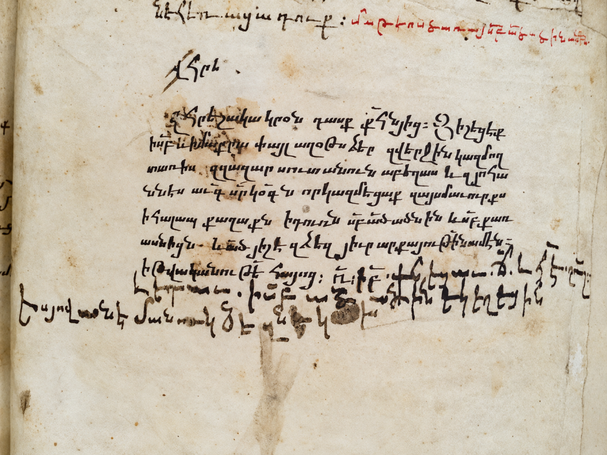

Home > Blog The Log of a Librarian > The Shape of Memory (09)
The Shape of Memory (09)
Armenian Colophons and the Work of Remembrance
Scribes, Patrons, and the Making of Medieval Manuscripts
This post is part of a series that explores the many ways human societies have stored, transmitted, and transformed memory across time, beyond the narrow histories centered on books and writing. It approaches archives, documents, and memory systems as historically situated technologies shaped by power, ecology, material conditions, and cultural worldviews, while examining forms of transmission often excluded from dominant narratives of literacy and preservation: oral traditions, woven patterns, musical structures, ritual performances, landscapes, bodies, and other living infrastructures of memory. Check all the posts in this section's index.
A Woman Named Sabah
In 1432, in the Armenian city of Arčēš, near Lake Van, a priest named Karapet copied a Maštoc', a manuscript containing rites and ceremonies of the Armenian Church. Near the end of the book, a lengthy colophon recorded those who had helped bring it into existence. Among them was a woman named Sabah. Her contribution was paper.
We know little else about her. The record does not say whether she made the paper, purchased it, or obtained it from someone else. But someone involved in commissioning the manuscript wanted her contribution remembered.
The colophon also names Mkrtič', the learned cleric who commissioned the book; Karapet, its principal scribe; Yovhannēs, who contributed writing; Hayrapet, who bound it; Minas, who illustrated it; and T'ovma, who supplied the exemplar from which the text was copied. These names turn the manuscript into evidence of a collective undertaking, supported by materials, expertise, patronage, and personal relationships.
The book survives as manuscript 62 in the Pontificio Collegio Armeno in Rome. Its colophon, on folios 174v–175v, has been studied by Anna Sirinian. Without that record, the manuscript's handwriting, decoration, and binding might reveal something about its manufacture, but not the identities of many people who made it possible.
Yet the colophon does more than tell us who was there. It shows who someone thought deserved to be remembered.
Writing Remembrance
The Armenian term yišatakaran, usually translated as "colophon," carries the sense of memorial or remembrance. Such texts were commonly written at the end of a manuscript, though they could also appear after sections or in margins. The tradition is attested in surviving Armenian manuscripts from at least the ninth century and became particularly extensive in later medieval centuries.
A colophon might name a scribe, patron, place, and date; identify the political or ecclesiastical authorities of the day; praise those who assisted; and ask future readers to pray for them. Some occupied a few lines. Others became elaborate accounts of religious devotion, family relationships, hardship, or contemporary events.
Their language was often conventional. Scribes described themselves as sinful or inadequate, praised patrons, and employed established prayers and formulae. As Sirinian has shown, colophons followed recognizable patterns without being identical. A manuscript copied in Jerusalem in 1476 even contains a model colophon with placeholders for inserting names and dates.
Those conventions had a purpose. Books were commissioned as devotional offerings, gifts to churches, and memorials to relatives, including the dead. Recording a name invited future readers to remember that person in prayer. The colophon addressed people who had not yet been born.
In the 1432 Maštoc', there is a revealing complication: Yovhannēs wrote the colophon, but its principal voice belongs to the patron, Mkrtič'. The man holding the pen and the person speaking through the words were different. Mkrtič' praised those who had worked on his book, placing their names within a record shaped by his own religious and commemorative purposes.
Sabah's presence is precious precisely because it was selective. We can identify her assistance, but cannot assume that every supplier, apprentice, or craftsperson received equal recognition. The colophon preserved names and organized a particular account of who should be remembered.
The Conditions of Copying
The people behind manuscripts were not always treated with the generosity suggested by commemorative prayers.
In 1419, Grigor Axalc'xec'i completed a manuscript at the monastery of Hermon. His colophon, discussed at length by Avedis Sanjian, is full of frustration. Grigor was a larip, a stranger living away from home. Locust infestations had devastated the surrounding region, the monastery's refectory had ceased functioning, and relations among its inhabitants had deteriorated.
Grigor complained that other monks had cells, food, and people to help them, while he was repeatedly excluded. On one occasion he went hungry until evening and received only a cucumber, which he refused. He also struggled to secure access to the exemplar needed for copying: other students competed for the same texts, and their teacher distributed sections unevenly.
Eventually, a family outside the monastery began sending him food. Grigor recorded their kindness and said that he completed the manuscript in seventy-four days.
His account is not an impartial report of monastic life. He was angry, and he used his colophon to set down his grievances. But that is partly why it is valuable. It exposes the practical dependence of a scribe on food, shelter, writing materials, access to exemplars, and the cooperation of others. It also shows a writer using the manuscript to defend his own labor before future readers.
Other scribes recorded problems with ink, paper, illness, or unreliable copies. In 1458, Yohanēs rejected criticism of his ink and blamed paper that had not been properly prepared. Another scribe described alternating among several books while pages dried. Such details help reconstruct the daily mechanics of copying, which finished manuscripts rarely explain on their own.
A Book Carried Through War
Historical events could enter a colophon because they interrupted the making of a book.
In 1469, Matt'ēos was copying a commentary on the epistles by Sargis Šnorhali amid military upheaval. His account names the changing rulers and describes his own displacement. He carried the unfinished manuscript as he fled from one place to another, eventually remaining in uncertainty at Elivard, near Mount Ara.
The colophon makes the book's production inseparable from its journey. A manuscript begun under one political regime was still being copied under another; its pages accompanied the scribe through the disruption.
In 1352, Kirakos Albakec'i asked readers to forgive the quality of his handwriting. Fear had made his hand tremble, he explained, and difficulties obtaining paper accompanied the interruption of his work. These details do not turn colophons into transparent chronicles. Medieval scribes could exaggerate, employ religious explanations for calamity, or repeat information they had not witnessed. Their accounts need comparison with other evidence.
Still, they preserve something a formal political history may overlook: what upheaval did to the act of making a book.
Who Remains in the Record?
Remembrance was neither comprehensive nor permanent. A manuscript copied in 1266 by Yovhannēs Erznkac'i once named a teacher associated with its commission. That name was later erased. The colophon had been written to preserve a relationship, but subsequent hands altered what later readers could know.
The 1432 Maštoc' had its own complicated afterlife. Łewond P'irłalēmean transcribed its colophon at the monastery of Gomk' near Bitlis in 1881. Later the manuscript disappeared from scholarly view, until it was identified in Rome in 2000. Comparing the original with earlier editions revealed omitted passages, including details concerning the book and people involved in its production.
Editors, too, made decisions about what deserved attention. Sanjian's influential 1969 collection selected historical passages from a much larger body of Armenian colophons, particularly those bearing on the history of the Middle East. His work made otherwise inaccessible testimony available in English, but it was not intended to reproduce each colophon in full. Earlier editors sometimes excluded prayers and formulaic language as historically uninformative.
Those omitted phrases matter if our question is how memory was organized. A prayer that adds little to a military chronology may reveal the relationship between a patron, a scribe, and their anticipated readers. Scholarship changes as its questions change, and so does the documentary evidence it brings into view.
The colophon survives through several layers of selection: first by its medieval composer, then by later owners and copyists, and finally by collectors, editors, and historians. Its silences are part of its history.
The Work of Remembrance
Armenian colophons allow us to see manuscript production through the words of some of those who participated in it. We encounter a paper supplier, a patron, a hungry scribe, a book carried through war, and people whose names were recorded, altered, or lost.
These testimonies are invaluable, but they are not neutral inventories of medieval bookmaking. They were written for particular purposes: to thank, to pray, to complain, to justify, to commemorate. By naming some people and passing over others, they helped shape the historical visibility of the work behind a manuscript.
Sabah supplied paper to a book made almost six centuries ago. We know her name because a colophon carried it forward. We do not know the names of everyone who labored on that manuscript, nor whether its commissioner intended to recognize them all.
That difference is part of what these records teach us. The making of a book could become an occasion for making history, and for deciding whose part in that history would be remembered.
Bibliography